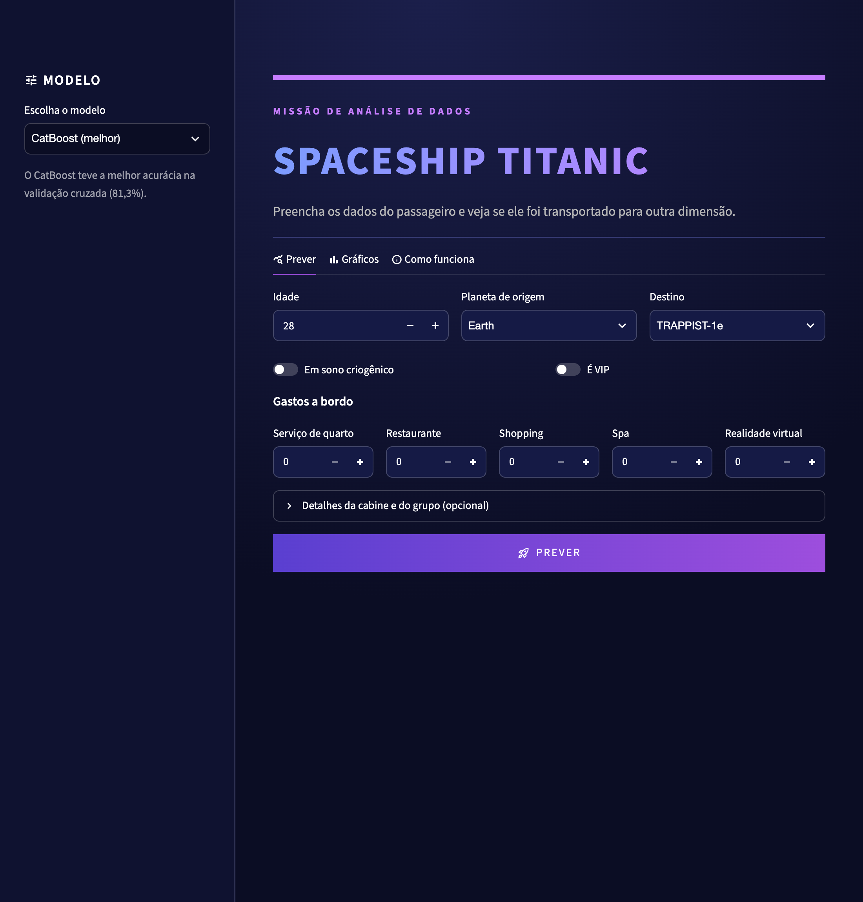
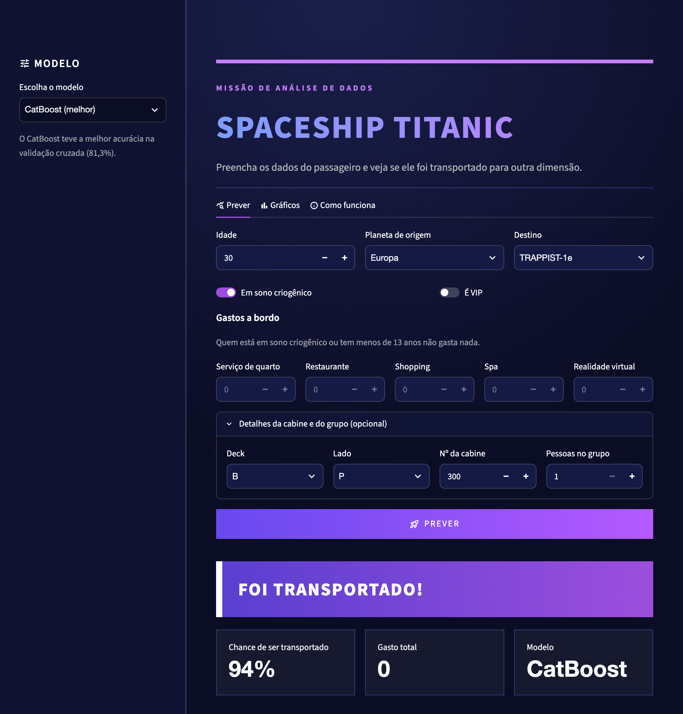
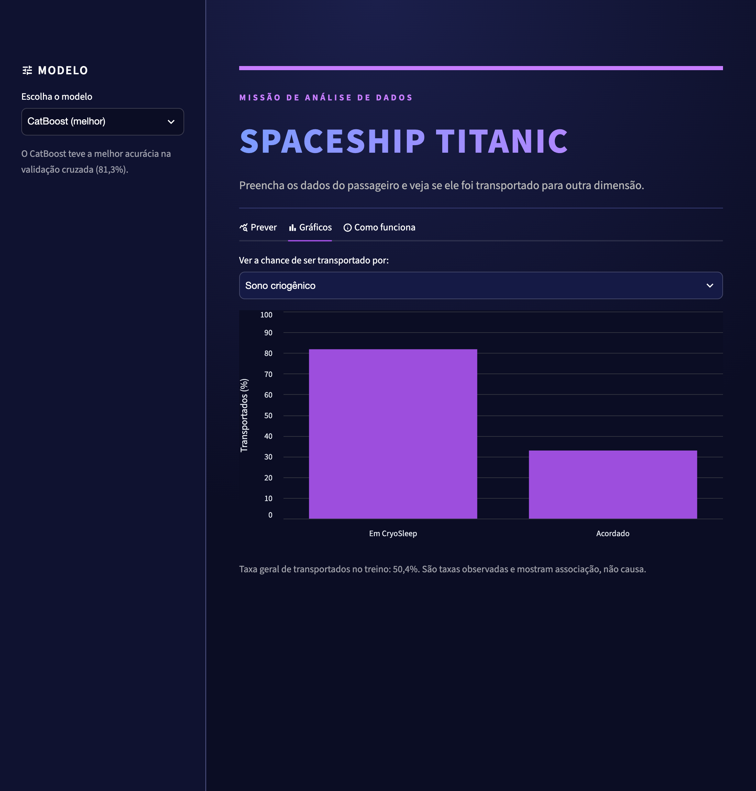

Data app com Streamlit e Ngrok que prevê se um passageiro foi transportado para outra dimensão.
Transported (True/False).| Variável | De onde vem |
|---|---|
Grupo e TamanhoGrupo | 4 primeiros dígitos do PassengerId e quantos têm o mesmo |
Deck, NumCabine, Lado | Cabin vem como "deck/número/lado": separamos |
GastoTotal | Soma dos 5 gastos |
GastoLuxo | RoomService + Spa + VRDeck |
GastoBasico | FoodCourt + ShoppingMall |
fit só no treino; o teste só recebe transform.Q3 + 8 × IQR → limite do GastoTotal
| Modelo | No app | Validação cruzada | Kaggle |
|---|---|---|---|
| CatBoost | padrão | 0,812 | 0,808 |
| Random Forest | sim | 0,804 | 0,803 |
| Regressão Logística | sim | 0,788 | 0,793 |
| KNN | sim | 0,784 | 0,788 |
Também testados no notebook: SVM (0,803), Decision Tree (0,796) e Naive Bayes (0,765) no Kaggle.
joblib.dump(modelo, 'modelos/modelo_catboost.pkl') # 4 modelos, um por algoritmo joblib.dump(list(colunas), 'modelos/colunas_treino.pkl') joblib.dump(padronizador, 'modelos/padronizador.pkl')
| Trecho | O que faz |
|---|---|
@st.cache_resource | Lê o .pkl uma vez só e guarda na memória |
montar_linha() | Põe o passageiro digitado no formato do treino |
st.sidebar | Escolha do modelo |
st.tabs | Prever · Gráficos · Como funciona |
st.metric | Chance (%), gasto total e modelo usado |
# 1 carrega modelo, colunas e padronizador # 2 monta a linha igual ao treino linha = montar_linha(passageiro, colunas_treino) # 3 padroniza com o MESMO scaler do treino dados = padronizador.transform(linha) # 4 usa as colunas do modelo (29 ou 26) # 5 chance de ser transportado prob = modelo.predict_proba(dados)[0][1] # 6 50% ou mais = transportado
localhost:8501, que só existe lá dentro.ngrok.set_auth_token(NGROK_TOKEN) url = ngrok.connect(8501) print(url.public_url)
Nosso link: https://3702-35-204-73-86.ngrok-free.app/
Nunca suba o token real para o GitHub. Se der página em branco: !cat logs.txt.



O link do Ngrok só abre enquanto a sessão do Colab estiver ativa. Confira a lista com o PDF do enunciado.